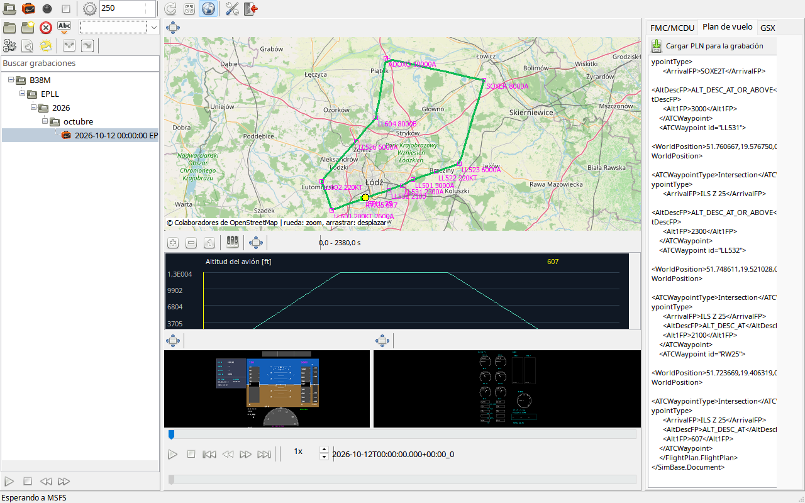

Ajuste primero biblioteca y datos, después alturas con separadores. Se mantienen proporciones y geometría de instrumentos; márgenes vacíos son normales.
Arrastre cabeceras fuera para desacoplar o a un destino para acoplar. La acción de ventana cambia estado e icono. Cerrar restaura el contenido. Un contenedor vacío se contrae; estado y geometría se guardan por vista.
Centro con mapa/gráficos/instrumentos/tiempo, biblioteca izquierda y datos a la derecha. Los separadores distribuyen espacio.
| Opción / acción | Funcionamiento y limitaciones |
|---|---|
| Ventana aparte | Mueve el mismo frame y cambia el icono; conserva datos y sincronización. |
| Pestañas | Arrastre el encabezado para separar y acople a barra/borde disponible. Cerrar devuelve la pestaña a su panel original. |
| Instrumentos juntos | PFD y EICAS/ECAM pueden compartir ventana flotante mediante los destinos de acoplamiento. |
| Tamaño | Conserva proporciones; los márgenes evitan deformar los instrumentos. |
| Guardar / restaurar | Recuerda estado y geometría de cada ventana. Un host vacío se contrae. Restaurar diseño en ajustes no borra vuelos. |
